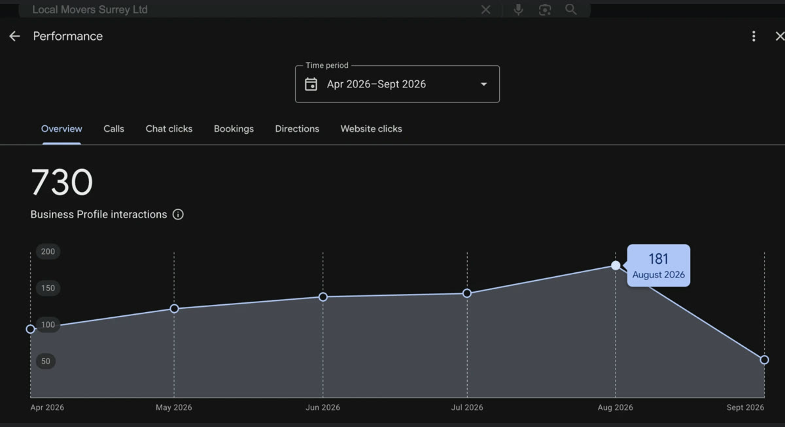
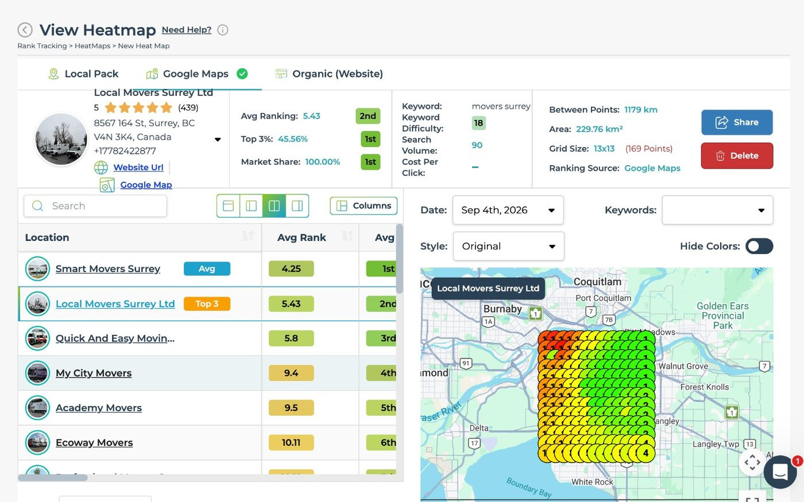
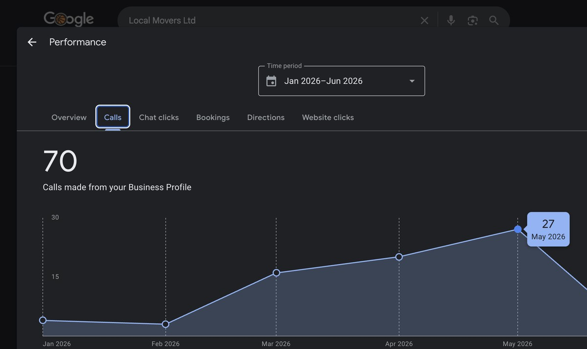
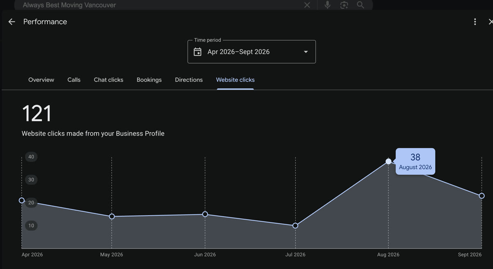

730
Business Profile interactions
Surrey BC mover · Apr to Sept 2026

If I don't, I work for free until you're there.
Book your free audit
Yes, I want more customers from GoogleFree 20 minute audit. No obligation.

1st on the map for “movers surrey”, in the top 3 across 45.56% of the grid. A moving company in Surrey, British Columbia, scanned 4 September 2026.

730
Business Profile interactions
Surrey BC mover · Apr to Sept 2026

205
Calls straight from the profile
Same mover · Apr to Sept 2026

121
Website clicks from the profile
Vancouver BC mover · Apr to Sept 2026
Straight off Google, exactly as it reports them. Nothing here is redrawn.
Twenty minutes. I'll show you where you rank right now and exactly what it takes to get you into the top 3.
Calendar not loading? Open it in a new tab.